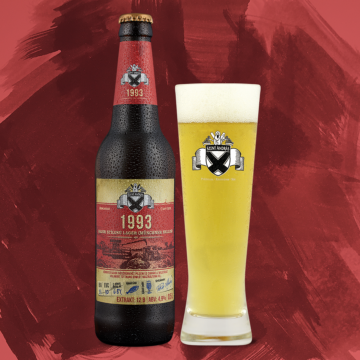

Típus: Bajor stílusú lager / Münchner helles / Bajor világos / Müncheni lager / Münchner hell / Munich helles
1993-ban az Arany Korsóval kezdődött minden Békésszentandráson, így illendő, hogy a 25 éves jubileumi sörünk is az eredeti recept alapján főzött, bajor stílusú lager legyen. Kóstolásnál gondolj Simkó Józsefre és egykori csapatára, akik áldozatos munkájukkal lerakták a Szent András Sörfőzde alapjait, és persze azokra, akik azóta is éltetik e nemes hagyományt.
Típus: Bajor stílusú lager / Münchner helles / Bajor világos / Müncheni lager / Münchner hell / Munich helles 1993-ban az Arany Korsóval kezdődött minden Békésszentandráson, így illendő, hogy a 25 éves jubileumi sörünk is az eredeti recept alapján főzött, bajor stílusú lager legyen. Kóstolásnál gondolj Simkó Józsefre és egykori csapatára, akik áldozatos munkájukkal lerakták a Szent András Sörfőzde alapjait, és persze azokra, akik azóta is éltetik e nemes hagyományt.